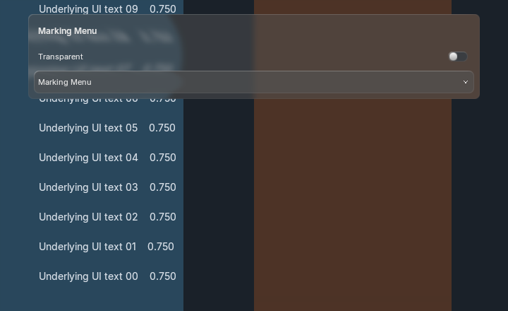
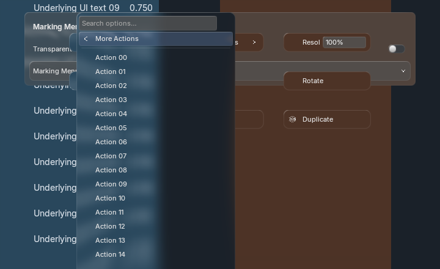
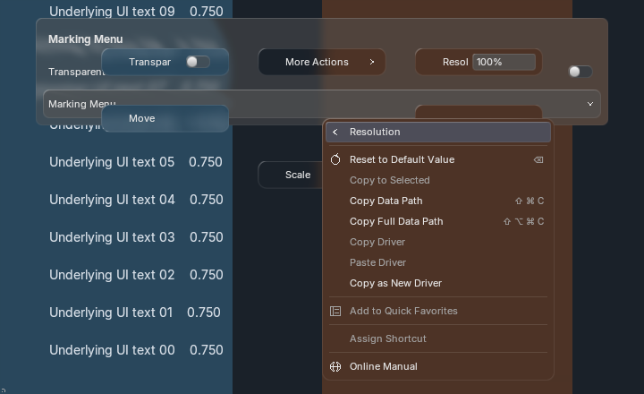
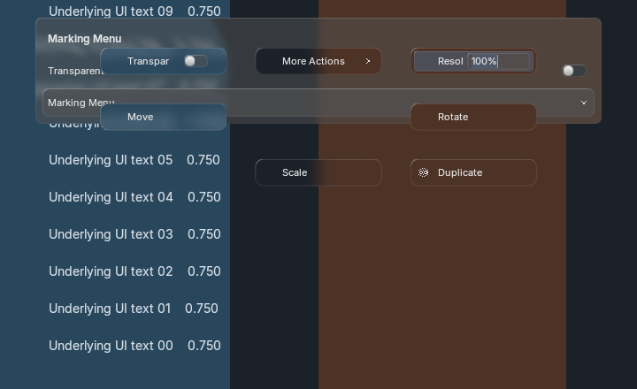
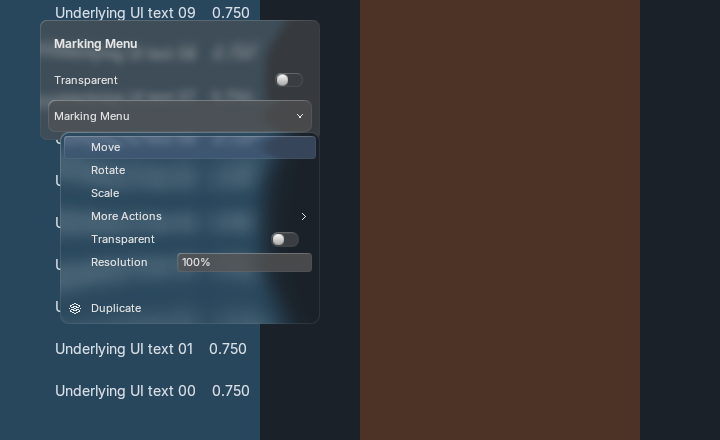
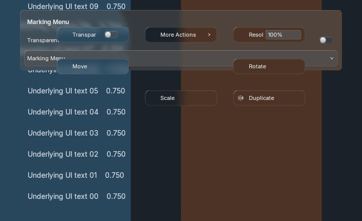
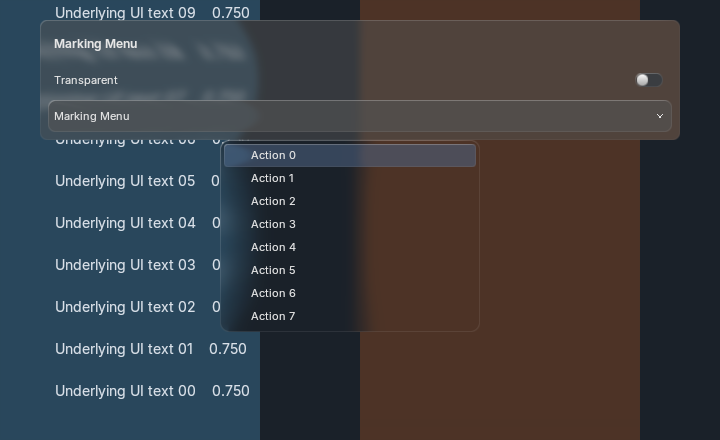
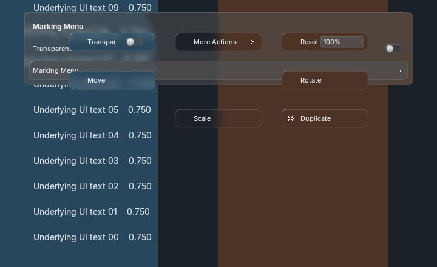

Eight directional slots, release-owned clicks, exact-property right-click menus, searchable children and the shared BVT glass/theme/spring painter. These are actual Blender 5.2.2 Metal frames at 1×. Visual acceptance and generated-reference matching remain open.
Focus gate not accepted: the test process became active despite the no-focus launch flag. Tyler confirmed an unsolicited focus steal; the shared runner now blocks all windowed tests pending safe requalification. Background execution passed on 5.1.2 and 5.2.2 with no activation observed. This diagnostic capture is retained for transparent review.
Integration and remaining gaps · Comparison and timings · Window focus audit · Background focus audit








The ordinary list before/after images are byte-identical. Seven pie petals share one retained backdrop revision and one strong-blur production. Timing samples measure warm CPU paint submission only, excluding readback.